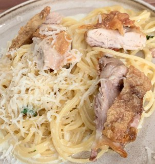

Chicken Alfredo

Description
Chicken Alfredo is an american version of italian pasta, most likely Pasta a Burro. Here's a version from a popular cooking showman Joshua Weissman. A delicious combination of parm reg and piccorino sauce with crunchy-crusty chicken will not leave you disappointed.
What are you waiting for? Let's make one. It's faster than takeout anyway.
Ingredients
- Chicken thighs with bone and skin on
- Parm reg and Piccorino Romano cheeses
- Heavy or medium Cream
- Butter
- Thyme
- Garlic
- Pasta (Spaghetti works best)
Steps
- Cut the bone out of the chicken. You can use it for stock later. Salt the chicken from both sides. Put a pan on a medium heat. Splash some oil in there and put it on medium heat. Wait for it to get hot-hot-hot and sear the chicken skin down. You would probably want to add some more salt and pepper on top later on.
- Grate some cheese (around a cup), mince some garlic (few cloves) and cut some thyme. You will need someTHYme... Get it? Do you GET IT?!
- Put the pasta on stove, salt the water generously.
- When the chicken is done, flip it over the other side and put it in the preheated oven.
- Take another pan (with high brims) and pour some heavy cream in there. Put it on medium heat and throw in some butter. Once it's bubbly add the grated cheese mixture and put it off the heat. Mix thoroughly. Add the garlic and thyme.
- Once the pasta is ready take with a tongs and drop it right in the sauce. Mix thoroughly. Get the chicken out.
- Serve with some cut chicken and parm reg on top. Enjoy you fast and delicious meal!